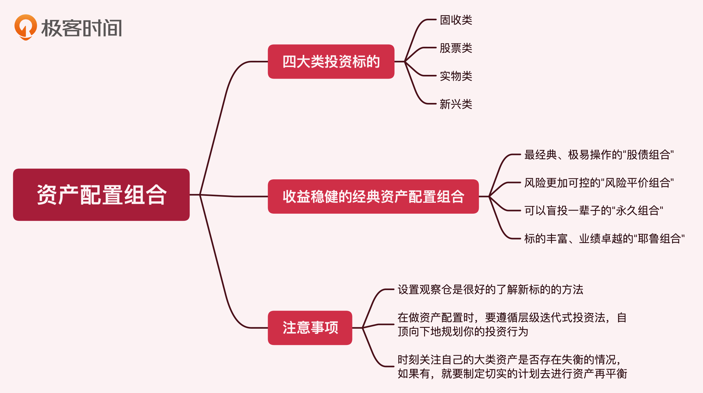

- 00 开篇词 为什么说程序员最适合学财富管理？.md
- 01 财富框架：建立属于你自己的财富双塔.md
- 02 个人发展：你自己的发展才是最大的财富源泉.md
- 03 理财金字塔：如何建立稳固的投资理财结构？.md
- 04 实战知识：有哪些收益稳健的经典资产配置组合？.md
- 05 支点投资法：主动投资是讲逻辑的！.md
- 06 不当韭菜：在财富管理的过程中摆正心态，知己知彼.md
- 07 职业方向：如何选择一个有前景的职业方向？.md
- 08 职业规划：大公司VS小公司，怎样选择更有前途？.md
- 09 期权股权：如何正确处理公司的期权、股权？.md
- 10 跳槽涨薪：如何规划一条合理的职业道路？.md
- 11 财富拓展：35岁失业？程序员如何拓宽财富渠道？.md
- 12 房产投资：如何做出理性的买房决策？.md
- 13 实战知识：让我们编程计算下怎么还房贷最合适.md
- 14 基金投资：如何让专业人士帮你赚钱？.md
- 15 实战知识：如何选出一只优质的基金？.md
- 16 股票投资：最适合散户的股票投资方法是什么？.md
- 17 投资闭环：如何成为越来越专业的投资者？.md
- 18 技术优势：程序员如何用技术超越其他投资者？.md
- 19 量化投资：典型的量化投资系统都包含哪些模块？.md
- 20 价值投资：永远不过时的中长期投资策略.md
- 21 趋势跟踪：怎样跟着趋势一起赚钱？.md
- 22 轮动策略：如何踩准市场变换的节奏？.md
- 23 对冲思想：这个世界上有稳赚不赔的生意吗？.md
- 24 多因子模型：整合不同策略，形成合力的顶层框架.md
- 25 机器学习：我们能用机器学习来建立投资模型吗？.md
- 26 量化实战：从0到1搭建起一套简单的量化投资系统（上）.md
- 27 量化实战：从0到1搭建起一套简单的量化投资系统（下）.md
- 番外一 王喆对话李腾：程序员对基金经理的灵魂十问（上）.md
- 番外三 有哪些能够持续学习的参考资料和相关网站？.md
- 番外二 王喆对话李腾：程序员对基金经理的灵魂十问（下）.md
- 番外四 知识总结：这门课的全部思维导图.md
- 答疑课堂（一） 财富框架篇、个人发展篇思考题集锦.md
- 答疑课堂（二） 投资实战篇、投资进阶篇思考题集锦.md
- 结束语 知行合一：财富管理是一生的事情.md
因收到Google相关通知，网站将会择期关闭。相关通知内容
番外四 知识总结：这门课的全部思维导图
你好，我是王喆。
我们这门课程已经接近尾声了，为了加深你的理解和记忆，也为了方便你回顾学习，我把这门课的核心知识点总结成了几张思维导图。你可以对照着这些图片，把这门课的内容从头到尾梳理一遍。回望来路，相信你会有更多新的体会和思考。-

- -
-
 -
-


© 2019 - 2023 Liangliang Lee. Powered by gin and hexo-theme-book.